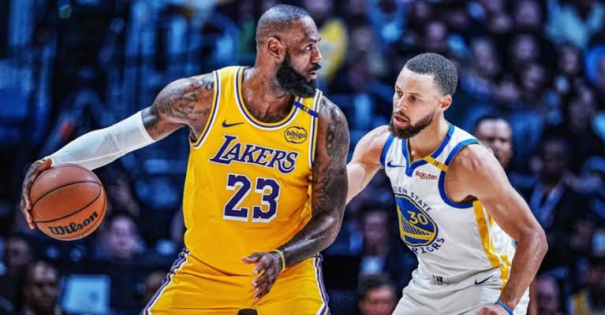

As cinco posições tradicionais
1. Armador
Organiza as jogadas e distribui a bola entre os companheiros.
2. Ala-armador
Ajuda na criação das jogadas e costuma ser um bom arremessador.
3. Ala
Atua tanto no ataque quanto na defesa, combinando velocidade e versatilidade.
4. Ala-pivô
Participa dos rebotes, das jogadas próximas à cesta e dos arremessos de média ou longa distância.
5. Pivô
Geralmente atua próximo à cesta, disputando rebotes e protegendo o garrafão.
